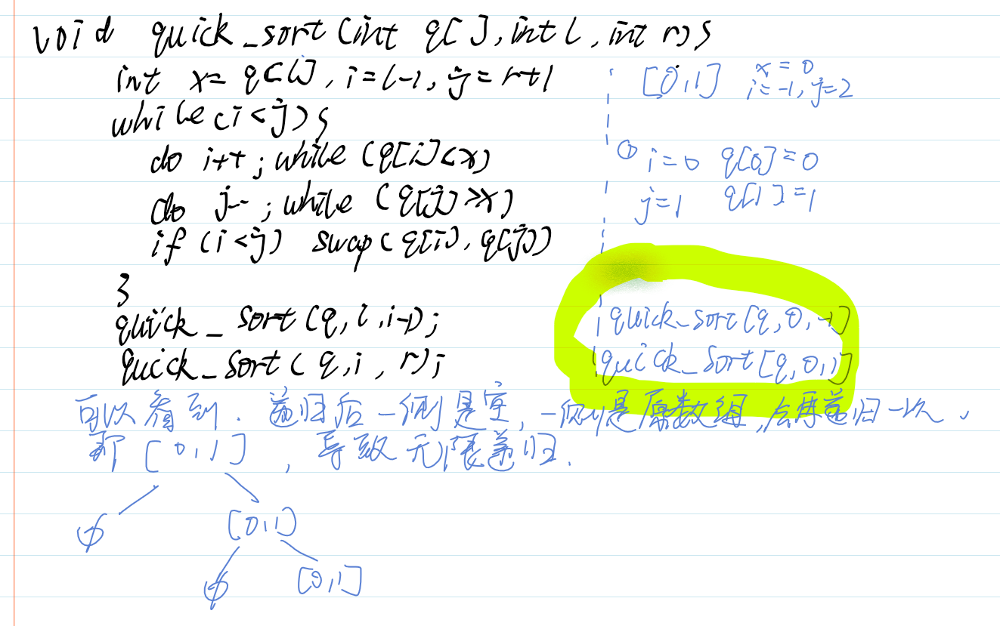
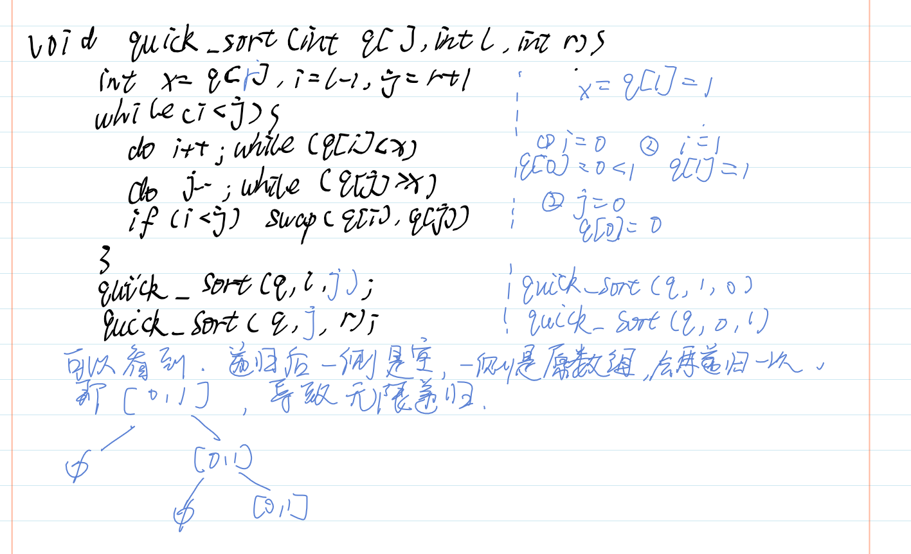

快排
void quick_sort(int q[],int l,int r){
if (l>=r){ //判断输入错误和数组大小为1
return;
}
int x = q[(l+r)>>1], i = l - 1, j = r + 1;
while(i < j){
do{
i++;
} while (q[i] < x);
do{
j--;
} while (q[j] > x);
if(i < j){
swap(q[i], q[j]);
}
}
quick_sort(q, l, j);//j变成i-1，那x不能取q[l],写j不能取q[r]，所以统一取(l+r)/2
quick_sort(q, j+1, r);
}
为什么当x=q[l]，递归把j换成i的时候可能会导致死循环？
、
当x=q[r]，则递归的右边界不能取j，原因也是一样。

二分归并排序
void merge_sort(int q[],int l,int r){
if(l >= r)
return ;
int mid = (l+r)>>1;
merge_sort(q,l,mid);
merge_sort(q,mid+1,r);
int i = l,j = mid+1,k = 0;
while(i <=mid && j <=r){
(q[i] <= q[j]){
temp[k++] = q[i++];
}
else{
temp[k++] = q[j++];
}
}
while(i<=mid){
temp[k++] = q[i++];
}
while(j<=r){
temp[k++] = q[j++];
}
for(i = l,j = 0;i <=r;i++,j++)
q[i] = temp[j];//当次排序结果写回数组
}寻找边界的二分
int Left(vector<int>& nums,int target){
int left = 0,right = nums.size()-1;
while(left < right){
int mid = left+(right-left)/2;
if(nums[mid]>=target){
right = mid;
}
else{
left = mid +1;
}
}
if(nums[left] != target){
return -1;
}
else
return left;
}
int Right(vector<int>& nums,int target){
int left = 0,right = nums.size()-1;
while(left < right){
int mid = left + (right-left)/2+1;
if(nums[mid]<=target){
left = mid;
}
else{
right = mid-1;
}
}
if(nums[left] != target){
return -1;
}
else
return left;
}二叉树遍历
vector<int> inorderTraversal(TreeNode* root) {//中序
stack<TreeNode*> st;
vector<int> ans;
auto cur = root;
while(cur || !st.empty()){
while(cur != nullptr){
st.push(cur);
cur = cur->left;
}
cur = st.top();
st.pop();
ans.push_back(cur->val);
cur = cur->right;
}
return ans;
}
vector<int> preorderTraversal(TreeNode* root) {//前序
vector<int> ans;
stack<TreeNode*> st;
if(root)
st.push(root);
while(!st.empty()){
auto cur = st.top();
st.pop();
ans.push_back(cur->val);
if(cur->right){
st.push(cur->right);
}
if(cur->left){
st.push(cur->left);
}
}
return ans;
}
vector<int> postorderTraversal(TreeNode* root) {//后序
vector<int> ans;
stack<TreeNode*> st;
auto it = ans.begin();
if(root)
st.push(root);
while(!st.empty()){
auto cur = st.top();
st.pop();
it = ans.insert(ans.begin(),cur->val);
if(cur->left)
st.push(cur->left);
if(cur->right)
st.push(cur->right);
}
return ans;
}